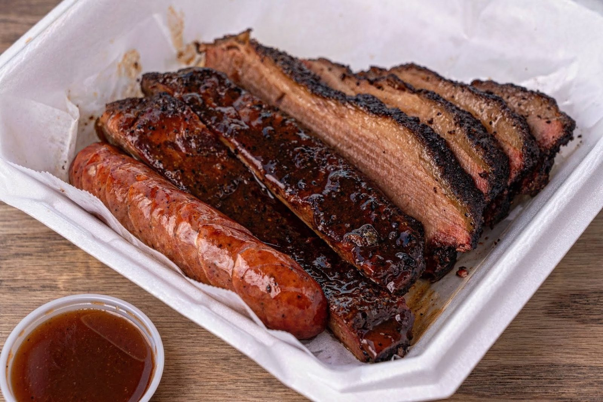

Brisket street tacos
Smoked brisket on tortillas with onion, cilantro and cheese. Barbecue and street tacos combined.


Smoked meats · Bandera Rd, San Antonio
Smoked meats, brisket street tacos and grilled cheese from a trailer on Bandera Rd.
On the menu
Brisket, every way we make it.
Smoked brisket on tortillas with onion, cilantro and cheese. Barbecue and street tacos combined.
Chopped brisket pressed into a grilled cheese.

Chunky smoked brisket on a bun.


4.693 Google reviews
WOW! We've grown up around street tacos as well as barbecue, including brisket, but have never had the two combined. What a combination. After looking for a barbecue place in San Antonio and coming across the picture of the brisket street tacos, we knew we had to try them. Drove two hours from Austin and they were worth the drive. Great food, great owner, very friendly, and good portion size as well.
1st time visit. My brisket sandwich was to die for. It was the most delicious brisket. Would totally recommend it. Thank you for the extras. Will definitely visit again. Thank you
The brisket grilled cheese. Wow. I also jad the sausage wraps with beans and mac& cheese. Everything was delicious 😋

Our story
Smoked meats from a black-and-red trailer, with picnic tables and string lights out front.
Friendly service, generous portions, extras thrown in. Brisket is the star: tacos, grilled cheese, sandwich.
Visit
7730 Bandera Rd, San Antonio, TX 78238
Open Thursday to Saturday evenings. Check Facebook or Instagram for updates.